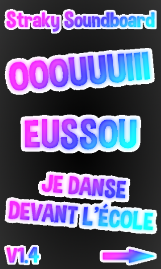
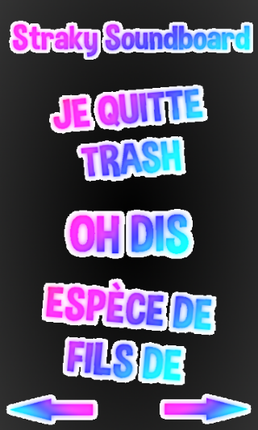
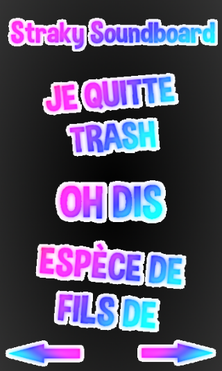

Straky Web
Straky Soundboard est une application de son.
Avec elle vous aurez tous les sons les plus culte
de ma chaîne Youtube 5tr4k3r à porter de main.
Appuyez sur le son souhaitez et c'est parti.
Amusez-vous à jouer plus d'une dizaines de sons
avec un fort volume sonore, quitte à troll vos amis.
Voici quelques photos :
  

Il est disponible en téléchargement ci-dessous.
Télécharger Disponible sur Google Play